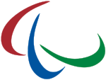
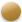

Les Jeux paralympiques d'hiver de 2014, officiellement appelés les XIe Jeux paralympiques d'hiver, se dérouleront en 2014 à Sotchi, dans le Caucase en Russie. C'est la première fois que les Jeux paralympiques se tiennent en Russie.
Cinq sports sont au programme de ces Jeux paralympiques :
| Pays | Total | ||
|---|---|---|---|
| Or | Argent |  Bronze | |
| Russie | 80 | ||
| 30 | 28 | 22 | |
| Allemagne | 15 | ||
| 9 | 5 | 1 | |
| Canada | 16 | ||
| 7 | 2 | 7 | |
| Ukraine | 25 | ||
| 5 | 9 | 11 | |
| France | 12 | ||
| 5 | 3 | 4 | |
Marie Bochet est une skieuse handisport française dans la catégorie "Debout" dont la carrière sportive a débuté en 2010 au niveau international. Elle remporte quatre titres paralympiques en descente, super G, super combiné et en slalom géant. Ses quatre médailles représentent le tiers des médailles obtenues par la délégation française.